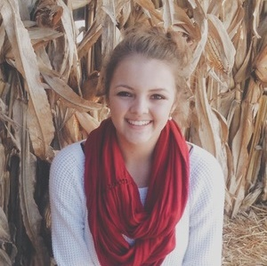
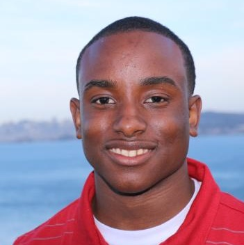

What Is the Prize?
For first year students, the highest achievement earners from each semester will win the prize. For second year students there is only one winning team each semester.
The prize for first year students is a trip to San Francisco to tour Google, LinkedIn, and more.
The prize for the winning teams (one from each semester) of second year students is up to them. They have the option of going on the San Francisco Trip (if they didn't get to go the previous year), an iPad Mini or an Apple Watch.
2013-2014 San Francisco Trip
On April 2, an event at the Chamber was held to announce the CO:de Catalyst winners. Treehouse sent a videographer and a representative. The event was written up in USA Today. The top 6 students were from 2 of the 3 high schools and were a diverse group of gender and ethnicity. 3 of the students had never flown before and 1 had never left the state. Minds would be blown.
On April 16, the CO:de Catalyst winners flew to San Francisco. They had private tours of Google, LinkedIn and Runway (co-working space with 75 startups). They also toured Stanford, and had a private UX workshop. The students took in the sites and tried lots of different ethnic food.
To watch the video for the 2013-2014 San Francisco trip, click here.
2014-2015 San Francisco Trip
TheCO, a West Tennessee-based community of entrepreneurs, creatives and web developers, is pleased to announce that 10 area high school students have been awarded with trips to San Francisco for earning the highest honors in the CO:de Catalyst program.
This year's winners include seven females and three males, an inspiring mix considering that statistics show web coders trend male. "TheCO is thrilled to be able to reward, encourage and support these students," theCO CEO Ben Ferguson says."To have such diversity within our winners is a testament to moving West Tennessee forward. The support placed on the CO:de Catalyst program by administrators, local leaders, parents and most importantly, the educators, is critical in its present and future success.
To watch the video for the 2014-2015 San Francisco trip, click here.
Past Winners
Shelby Larson
"My favorite part of CO:de Catalyst was participating in the project competition. I enjoyed putting what I had learned to use by designing a website that went on to win 3rd place... I think coding is a very important skill to have because it will be a very useful tool when looking for a job. As technology progresses, more people that can code will be needed, so getting a head start now is definitely beneficial for me."
Steven Prescott
"The CO:de Catalyst program gave me an opportunity to develop technical skills that I never would have had without it. TheCO provided us with high quality learning materials that made the process easier and quicker than I could have imagined. Without CO:de Catalyst I wouldn't have half of the technical skills that I possess today."